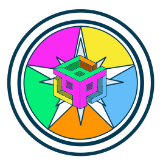
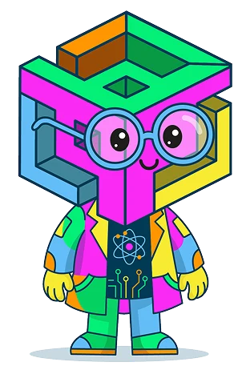

Empieza por aquí

Empieza por aquí
Has finalizado con éxito la
clic para continuar

Prototipo · para probar con docentes
Seis formas nuevas de interactuar con K-7, una por estación. Pruébelas antes de decidir cuáles pasan a la Expedición Docente.
O entre directo a una estación
Dentro del aula, el botón Estaciones de arriba a la derecha vuelve a este menú.
Gracias por recorrerlo. Puede volver a cualquier estación para probarla otra vez.